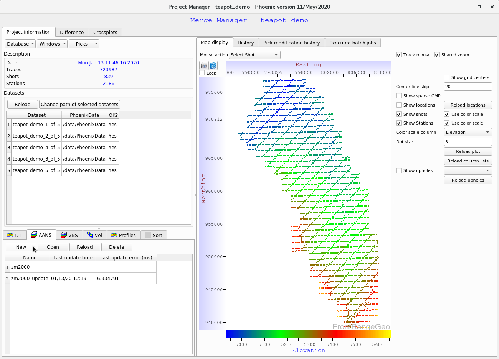
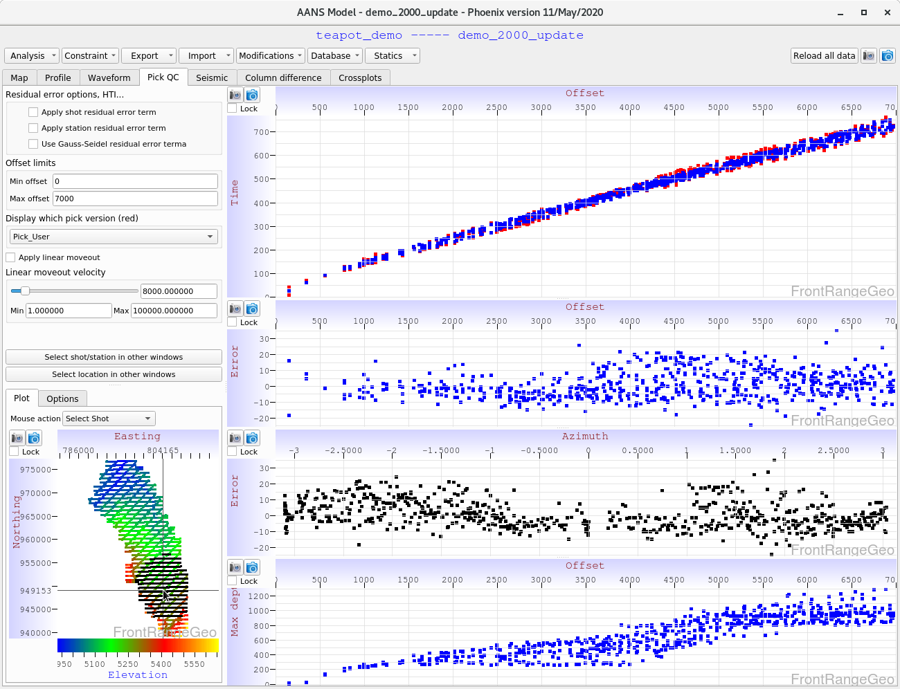

Tomographic modeling is the most powerful form of near surface modeling in Phoenix, it can capture details that Delay Time misses.
Phoenix introduces a new tomographic modeling algorithm called AANS (or ANS). AANS is similar to the industry standard VNS approach in which model nodes are hung from and vary with the surface topography, but AANS dynamically adjusts model grid spacing during analysis to minimize traveltime error, producing more physical models.
It is easy to define any number of delay time models in Phoenix. This guide will cover creating an ANS model, updating it with picks, performing basic QC, and exporting. To create a VNS model, the process is essentially identical, simply use the VNS tab instead of the ANS tab at the beginning.
From the Merge Manager window, you can find the various model tabs at the bottom left of the screen. Select the “AANS” (“Auto Adaptive Node Spacing”) tab, and click “New”

A dialog will pop up to set the model parameters, such as name and node spacing. Select appropriate parameters and click “OK”
The initial model will be generated. Next, select the model and click “Open”.
Now you are in the Model Window, from which you can run analysis, and perform QC.
First, we’ll take our initial model and update it with some User defined picks. Navigate to the upper left “Analysis” tab and choose “Batch job: Launch model update”:
The first dialog lets you give your model a name, set the minimum and maximum offset ranges, choose pick decimation (here we use Pick decimation = 2, so everys second pick is used, to get the modeling done more quickly). Finally, choose the number of update iterations to do (default 18), and the set of picks to use, and click “Next”:
If you know your picks are unreliable in a certain offset range, you can exclude picks in that range with the next window. We leave this off for now:
Because data coverage at boundaries can be poor, you can stabilize the boundaries using this option. We leave this option off for now.
In the next window, set your minimum and maximum allowed velocities for the model.
(Note: Pay careful attention to the units of your model. By default Phoenix works in feet, so if your survey is in meters, divide the defaults by 3, or use your own judgment)
On this page you can also check or uncheck the “Force velocity to increase with depth” option. For the first model update, we recommend leaving this option on. Models can become unphysical if inversions are allowed during the first update. Leave this option on for the first update, and if you suspect it would be useful to model inversions, rerun the updated model later with this option disabled.
Depending on how well you trust your picks, and how much you suspect the survey geology varies spatially, you can apply differing amounts of model smoothing. We typically recommend leaving these options on, but you may use your judgment to smooth the models less.
If you have additional data to constrain the tomographic inversion with, this page sets the constraining blending function. This is an advanced feature. For now, we will leave it off.
On this page we set the depth weighting scheme - that is, how the tomographic update error is applied to the raypath nodes. We typically recommend leaving this option on its first setting.
The tomographic inversion can be stabilized by allowing the program to interpolate the velocity field into regions of low fold and poor offset range coverage.
We typically obtain good results using the default settings. You may wish to reduce the value from 2000 feet to 1200 feet (or 400 meters).
The value of RayPath_MinOffset can be plotted on the Map tab - it is recommended to do so before selecting this value.
Finally, we choose between running the Tomo update on the local machine or distributed over MPI. Set the number of threads to use per machine, and click “Finish”. If running locally, the job will start immediately. If running over MPI, you will need to run the shell script at
After the model update has completed, navigate back to the Merge Manager window, click the “AANS” tab, and click “Reload”. Select your updated model and click “Open”:
Drag out a profile by clicking and dragging on the basemap:
Next, navigate to the “Profile” tab at the top of the Model Window. This displays plots regarding the profile you just specified.
We will leave the first plot showing velocity as a function of depth.
For now, change the second plot to “Count”. This plot shows the node hit count of the model according to the number of simulated raypaths traveling through it. This plot is excellent for visualizing refractor boundaries (you will notice ANS captures refractor boundary locations much better than the older VNS approach).
If your model is too deep, you will see that no nodes at greater depths were hit, which is an indication you should make your model more shallow. If you notice that there is a large node hit count at the very bottom of your model, this is an indication your model is “pegging out” at the bottom, and that your survey requires a deeper model.
(Note: right-click on the color bar and select “black white” to color the graph in greyscale)
Next, we’ll examine how well the model matches the provided picks. Navigate to the “Pick QC” tab at the top of the Model Window, then click on the basemap at the bottom left to select a shot. Four plots are shown, from top to bottom:

Exporting the model is accomplished using the “Export” tab at the top of the Model Window. These options should be fairly self-explanatory.
To export statics, the process is the same as in the DelayTime Guide.